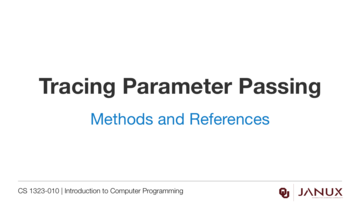
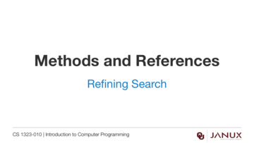

Methods and References
This section covers methods and references.
More information on parameter passing in Java.
Java code developed in the video from this lesson.
Lecture presentation
Lecture presentation

